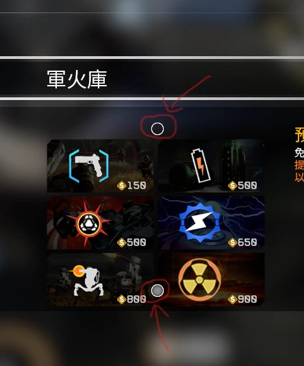

欢迎来到 SL,我将在这里为您提供指南
两份不同格式的萌新指南区别在于是否有图片以及排版。选择您喜欢的一份阅读便可
本教程为泰坦陨落2的北极星sl玩家准备,泰坦陨落1玩家无需阅读
本文档所有网址单击即可打开,可以使用搜索框进行查询
虽然该文件使用浏览器打开,但不用担心,它不会下载和上传任何数据
SL 是泰坦陨落2北极星 CN社区的服务器
欢迎来到 SL,我将在这里为您提供指南
两份不同格式的萌新指南区别在于是否有图片以及排版。选择您喜欢的一份阅读便可
本教程为泰坦陨落2的北极星sl玩家准备,泰坦陨落1玩家无需阅读
本文档所有网址单击即可打开,可以使用搜索框进行查询
虽然该文件使用浏览器打开,但不用担心,它不会下载和上传任何数据
SL 是泰坦陨落2北极星 CN社区的服务器
请确保您拥有正版的泰坦陨落2并装载了北极星 CN
如果您没有泰坦陨落2, 推荐先在 Steam 进行购买
如果您已经拥有并下载了泰坦陨落2,请先下载北极星 CN
北极星 CN官方网站有较为详细的下载教程,推荐下载北极星CN 启动器(自动安装器)
北极星CN官方下载教程本文档所有网址推荐复制到浏览器打开
如果您感觉过分困难,B站也有详细的教程
B站北极星CN安装视频教程(此视频与本指南部分教程重合)
如果您仍然感觉过分困难，可以求助于他人
在此段落遇到问题，在群内提问时请@悠尔0youer以便于改进萌新指南
如果没有安装指定 MOD，您仍然可以进入服务器，但会导致很多 bug
例如：无法看见精英泰坦血条、强力无法锁定精英泰坦,以及某些情况下的闪退。
建议您安装的mod：
EliteTitanFix20250719
单击我下载EliteTitanFix20250719Northstar.FD20250621
单击我下载Northstar.FD20250621同时文件也会存在 QQ 群:路径:群文件>萌新指南(群文件中有很多名称相似的文件,不要使用最新版本,请确认是正确的文件夹中，并且是正确的名称）
如果已经安装了摸鱼服的摸鱼飞弹 QQ 群的修复 mod,会导致 mod 冲突,保留一个即可。
精简教程:下载这两个mod并放在Titanfall2\R2Northstar\mods文件夹中。需要解压
详细教程:
在此段落遇到问题，在群内提问时请@悠尔0youer以便于改进萌新指南
无法进入较高难度的房间?在高难度房间无法使用某些泰坦?
当最高等级的泰坦仍不满足房间最低等级要求,您无法正常游戏
只有满足房间等级要求的泰坦才能被使用
北极星虽然解锁了所有神盾的效果，但神盾等级依然是从零开始计算
您需要从简单开始不断使用该泰坦，来提升它的神盾等级。直到您可以在想要的难度中使用它
只有7个原版泰坦计算神盾等级，客制化泰坦会和原版泰坦算到一起，所以您可以偷懒
为什么这些敌方/我方泰坦我都没见过？
本服务器拥有大量客制化内容 #客制化：即定制化或自定义
例如各种泰坦的核武变种,各种泰坦的精英变种等等内容
什么是精英泰坦？
精英泰坦是我们服务器的特色
外貌特征为白色至尊或者为黑红、黄色涂装的精英泰坦
精英泰坦拥有较高的血量,并且会更频繁的使用核心技能
不同的精英泰坦有不同的特性,您可以自行探索
在地图上,精英泰坦会显示它的泰坦种类(但是图标只有那么几个)，在抬头显示上,它拥有特殊标识
精英在普通和简单难度掉落电池（绿色），精英在困难和大师难度掉落强化电池（黄色）
黑暗精英则比白色精英更加强大
玩家使用精英泰坦:使用至尊皮肤的同时，使用坚韧光芒皮肤
为什么我的泰坦会被替换成其他泰坦？
在 SL 服务器中使用至尊泰坦会被替换为对应的客制化泰坦,帝王使用远征皮肤会被替换为远征
精英泰坦需要解锁后使用,解锁条件:
"在无我方精英,变种帝王在场的情况下万分无重启完美通过困难及以上难度以下地图三次
遗迹(要求前三名)、天使城(要求第一名)、虎大(要求第一名)、家园(要求前二名)、城镇(要求第一名)、设施(要求第一名)、战游(要求第一名)、系外(要求第一名)
将通过截图(要求整个游戏窗口,且能看到胜利字样,玩家排名,采集机情况)和uid发给管理@陵光庚辰 以解锁精英" #uid在游戏中显示，保持在在屏幕左上角那一串数字
截图举例如下

在 SL 服务器中使用至尊泰坦同时使用坚韧光芒皮肤会替换为精英泰坦,帝王坚韧光芒皮肤会替换为精英泰坦(注意:关于这类游戏内提示可能不准确)
关于帝王使用指定皮肤替换成神盾泰坦,图片在群精华内容,由@Acacia1076制作(注意:关于这类游戏内提示可能不准确)
目前暂时没有新版本相关文档,如果不清楚某项技能的具体效用,可以在群中询问他人
关于我们服务器的客制化泰坦,您可以去简单房间自行尝试.并不推荐您在其他难度的房间中尝试
为什么我的技能会被替换成其他技能？
在 SL 服务器中使用女性铁驭会被替换为对应的客制化铁驭(有不同的技能)
暂时没有合适的技能介绍,可能以后会更新
您可以在简单模式游戏中自行探索,不明白可以询问群友，如果想直接了解，可以关注@0youer群友后续的文档
为什么我的队友可以实现一些特殊功能，而我却不行？
在游戏内铁驭状态下长按 g 可以打开菜单,菜单中会显示一部分数值(默认键位下）
在菜单中可以召唤核武泰坦,使用巡飞弹
实心的两个菱形作为光标存在,通过提示消失后的短按来切换选择,长按则是使用
这并不复杂,根据菜单中的提示操作便可以完成
核武泰坦可以在商店中购买，在商店里购买的会直接出现在强化卡槽
在游戏内长按g即可以丢弃电池,长按 c 可以让铁驭使用电池,护盾电池会优先为您抵挡伤害
简单模式的特殊区别
在简单房间中，拥有更简单的精英、波次和至尊白色涂装下被强化的自动泰坦
为什么地图游戏内容出现变更?
我们改变了大部分地图
大部分地图敌方泰坦降落数量/种类/地点全部被改变
其中一部分地图被我们添加了特殊效果
例如波次变化,特殊事件,获得特殊武器
出现特殊事件时，游戏内会有文字或语音提示,请留意观察
关于恶性游戏行为
如果您的队友在比赛中途/波次重启时退出,您可以通过@管理 来举报他,需要有截图证据
两次被中途退出会被服务器ban,如果您是因为特殊情况而被迫终止游戏,请及时在群聊中发送信息,并与举报的队友达成和解
通过特殊手段故意伤害队友可能会被警告或处罚,如果是双方不介意的玩笑则无所谓
举报在群聊中就可以进行,请不要骚扰管理或者群内其他人
体验更多内容
欢迎在群聊中多多发言
后续版本更新时萌新指南也会一起更新
关于这个群聊
这边建议将群聊内名称修改为游戏 id,更方便交流（改不改都行）
虽然有时候群内有人发擦边内容,但是群内禁止任何非法内容进行传播!!
在群里互喷，可能会被暂时禁言或者撤回信息(当然并不一定)
关于游戏难度
或许我们服务器的游戏内容对你来说有一点难 #打游戏开心最重要
不要惊讶，我们服务器的简介中已经写明是高压边境服务器
祝您有一个愉快的游戏体验
精锐铁驭
经常参与测试的SL铁驭,要求并不具体 #打游戏开心就好:)
此功能手动找@0youer
群机器人
在群内发送"nscn"通过Tiko获取北极星服务器列表信息,功能为@ZZK群友提供
在群内发送".r[数字]d[数字]"通过Tiko随机获得指定数字(摇骰子),功能为@ZZK群友提供
q 群管家目前只负责给新玩家发送信息
是否加入了上述模组后游戏中的商店只能买一些强化和电池？
加入模组后的商店页面有三页,需要使用商店页面中的较小的圆形按钮来切换上一页/下一页
这个圆形按钮可能会和其他 UI 重合,这是正常的
是否在其他边境服务器内无法正常使用商店?
这是因为您使用了Northstar.FD MOD导致的,接下来我会告诉您如何禁用它
首先，使用北极星CN启动器启动北极星
打开最底部的"模组MODS"选项，在左边的mods列表中找到你需要禁用的mod
点击左边的绿色勾，当它变成红色的叉时，此mod已经被禁用。完成后请点击"重新加载模组MODS"或者退出北极星重新启动
当然,直接卸载 mod是更直接的方法，但下次游玩时会更加麻烦
是否在启动游戏时会报错?
首先，请尝试重新启动游戏。有一些问题会在重新启动游戏后消失。
您可能需要的材料有:报错内容截图
控制台截图(键盘上的`~可以打开控制台)
日志(logs)截图,需要在文件中寻找Titanfall2\R2Northstar\logs\按时间排序最后的文件
mods文件夹截图
尽可能描述您的状况,以便于群主/管理员/其他可以帮助您解决问题的群友可以尽快地帮您解决问题
也可以通过重装解决大部分问题:重装方法如下
B站北极星重装教程为什么我突然被弹飞很远了？
可能是因为敌方泰坦技能、特殊设计
为什么这个指南不包含所有内容的解释？
这个指南只面向于萌新
本人希望萌新能够自己探索,并不愿意破坏萌新的游戏体验
指南不定期更新,指南出现问题，请在群中@悠尔0youer
您大概可以信任萌新指南,萌新指南的更新简单且迅速，实际游玩过程中群主和管理员的发言往往是更加正确的
在特殊情况下跟不上版本并出现大面积错误@悠尔0youer会去删除老版本来保证您不会接受错误的引导